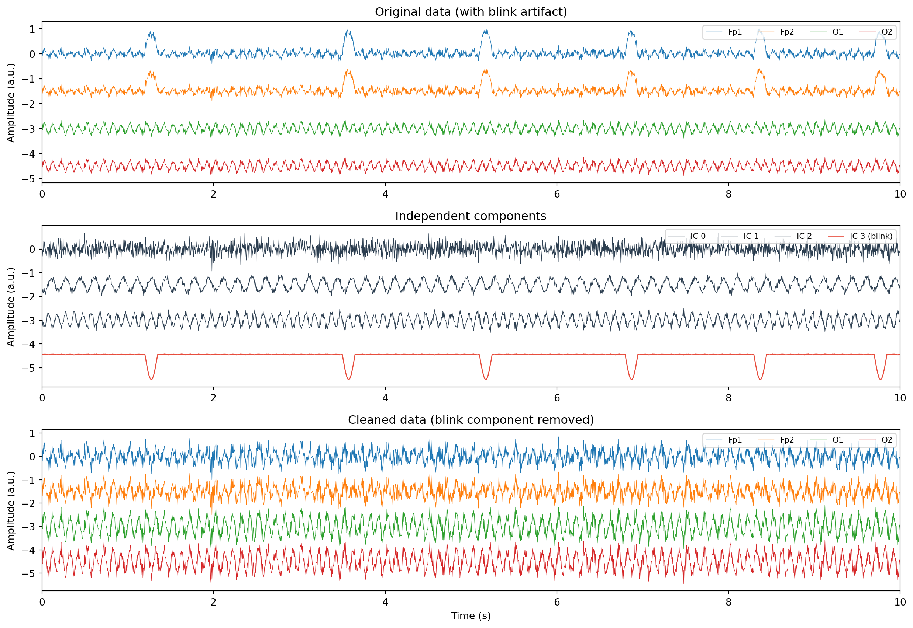

What ICA does conceptually, the unmixing matrix, FastICA vs Infomax, choosing the number of components, identifying artifact components, and reconstructing clean data.
Published
31 March 2026
Modified
31 March 2026
Why ICA matters
Filtering removes noise based on frequency: you can get rid of slow drifts and high-frequency muscle artifact because they occupy different frequency bands than the brain signals you care about. But some artifacts sit right on top of the frequencies of interest. Eye blinks produce large deflections that overlap with delta and theta frequencies. Heartbeat artifacts show up across a broad range. Horizontal eye movements contaminate frontal channels in the alpha and beta bands.
ICA separates these artifacts from brain activity based on their statistical independence, not their frequency. It works even when artifacts and brain signals share the same frequencies, which makes it one of the most powerful tools in the EEG preprocessing pipeline.
The cocktail party problem
The classic analogy for ICA is the cocktail party problem. Imagine you are at a party with three people speaking at the same time. You have three microphones placed around the room. Each microphone picks up a different mixture of the three voices, depending on its distance from each speaker.
Your EEG electrodes are like the microphones. Each channel records a mixture of signals from different brain sources and artifacts. ICA tries to “unmix” these signals, recovering the original sources from the mixtures.
Formally, we assume that the recorded data \(\mathbf{x}(t)\) is a linear mixture of independent source signals \(\mathbf{s}(t)\):
\[\mathbf{x}(t) = \mathbf{A} \, \mathbf{s}(t)\]
where \(\mathbf{A}\) is the mixing matrix. ICA estimates the unmixing matrix\(\mathbf{W} = \mathbf{A}^{-1}\) so that:
\[\mathbf{s}(t) = \mathbf{W} \, \mathbf{x}(t)\]
The recovered sources \(\mathbf{s}(t)\) are the independent components. Each component has a time course (how it varies over time) and a spatial pattern (how it projects onto the scalp, given by the corresponding column of \(\mathbf{A}\)).
Key assumptions
ICA relies on two assumptions:
Statistical independence: the source signals are independent of each other. Brain activity in different cortical patches and artifact sources (blinks, heartbeat, muscle) are generated by different physiological mechanisms, so this assumption is generally reasonable.
Linear mixing: each electrode records a weighted sum of the sources. This is a simplification (volume conduction is not perfectly linear), but it works well enough for scalp EEG.
There is also a mathematical requirement: at most one source can be Gaussian (normally distributed). Since EEG sources and most artifacts are non-Gaussian (they have skewed or heavy-tailed distributions), this requirement is usually satisfied.
FastICA vs Infomax
Two ICA algorithms are commonly used in EEG:
FastICA
FastICA (Hyvarinen, 1999) finds independent components by maximising negentropy, a measure of how far a signal’s distribution is from Gaussian. It is fast, converges in few iterations, and is the default in many software packages.
Pros: fast computation, well understood mathematically. Cons: results can vary slightly between runs (sensitive to initialisation), and it may not separate all sources as cleanly as Infomax for EEG data.
Infomax
Infomax (Bell and Sejnowski, 1995) finds independent components by maximising the information transfer through a neural network model. The extended version (Lee et al., 1999) can handle both sub-Gaussian and super-Gaussian sources.
Pros: more stable results across runs, generally considered the gold standard for EEG. Cons: slower than FastICA, especially with many channels.
MNE-Python supports both algorithms through its mne.preprocessing.ICA class. The default is FastICA, but you can switch to Infomax by setting method="infomax". For research analysis, Infomax (or its extended variant, method="infomax" with fit_params=dict(extended=True)) is the safer choice.
How to choose the number of components
ICA decomposes the data into as many components as there are channels (if you have 64 channels, you get 64 components). But you can ask for fewer components by setting n_components to a smaller number.
There are a few approaches:
Use all components: set n_components = n_channels. This gives ICA the most freedom to separate sources. It is the default and usually the best choice when you have clean data with no rank deficiencies.
Match the data rank: if you have already removed bad channels and re-referenced to average, the data rank is reduced by at least one. Setting n_components to the data rank avoids numerical problems. MNE can detect this automatically.
Use fewer components: setting n_components to, say, 25 when you have 64 channels means ICA only extracts the 25 “most independent” components. This can speed up computation, but you risk missing some artifact sources.
A practical guideline: start with the data rank as your number of components. If ICA has trouble converging or produces unstable results, try reducing by a few.
Identifying artifact components
After running ICA, you have a set of components. Some represent brain activity, and others represent artifacts. The task is to identify which is which, so you can remove the artifacts and keep the brain signals.
Blink components
Eye blinks produce a characteristic pattern:
Spatial pattern (topography): strong frontal projection, centred around Fp1 and Fp2, with a symmetric left-right distribution. This is the most reliable identifier.
Time course: occasional large deflections lasting about 200–400 ms, with long quiet periods between them.
Spectrum: dominated by low frequencies (below 5 Hz).
Eye movement components
Horizontal eye movements have a distinctive left-right asymmetry in the topography: one side of the frontal scalp is positive while the other is negative. Vertical eye movements look similar to blinks but are smaller and more sustained.
Topography: peripheral, often concentrated at temporal or frontal electrodes.
Spectrum: dominated by high frequencies (above 20 Hz), with a broad spectral bump rather than a clear peak.
Time course: either sustained (tonic contraction) or burst-like (phasic activity).
Heartbeat components
The cardiac artifact has a regular time course matching the heart rate (roughly once per second). Its topography varies but often has a broad, diffuse pattern.
Automated detection
MNE-Python provides automated methods to identify artifact components:
ica.find_bads_eog(): correlates components with EOG (eye) channels to find blinks and eye movements.
ica.find_bads_ecg(): correlates components with ECG (heart) channels to find cardiac artifacts.
These methods work well when you have dedicated EOG and ECG channels. If you do not, you can use frontal EEG channels as proxies for EOG.
Removing components and reconstructing clean data
Once you have identified the artifact components, removing them is a simple matrix operation. ICA reconstructs the data using only the non-artifact components:
In MNE, you mark artifact components by adding their indices to ica.exclude, then call ica.apply() to reconstruct the cleaned data.
A word of caution: each component you remove also removes some brain signal, because the separation is never perfect. Remove only components you are confident are artifacts. If you are unsure about a component, it is usually better to keep it.
Working example
The code below simulates multi-channel data containing brain-like oscillations, an eye-blink artifact, and noise. It runs ICA, identifies the blink component, and reconstructs clean data.
Data shape: (8, 2560) (8 channels x 2560 samples)
Extracted 4 independent components
Blink component identified: IC 3 (frontal loading = 0.0000)

ICA decomposition of simulated EEG. The blink artifact (Component 0) is identified by its large frontal projection and removed. The cleaned signal no longer shows the blink deflections.
In the top panel, you can see the large blink deflections in the frontal channels (Fp1, Fp2) while the occipital channels (O1, O2) are barely affected. The middle panel shows the four independent components: ICA successfully isolates the blink artifact into a single component (highlighted in red), with its characteristic sharp, intermittent waveform. The bottom panel shows the reconstructed data after removing the blink component. The frontal channels are now free of blink artifacts, while the underlying brain oscillations are preserved.
Key takeaways
ICA separates mixed signals into statistically independent sources. For EEG, this means separating brain activity from artifacts like blinks, eye movements, muscle tension, and heartbeat.
The method assumes that the sources are statistically independent and that the mixing is linear. Both assumptions hold reasonably well for scalp EEG.
Infomax is the recommended algorithm for EEG because it produces stable, reproducible results. FastICA is faster but can vary between runs.
Set the number of components to match the data rank (number of channels minus any rank reductions from re-referencing or bad channel removal).
Identify artifact components by inspecting their topography (spatial pattern), time course, and spectrum. Blinks have a strong frontal projection and intermittent large deflections. Muscle artifacts have peripheral topography and high-frequency spectra.
Remove only components you are confident are artifacts. Each removed component takes some brain signal with it, so conservative removal is preferable to aggressive cleaning.
MNE-Python’s ica.find_bads_eog() and ica.find_bads_ecg() can automate artifact component detection when dedicated EOG and ECG channels are available.